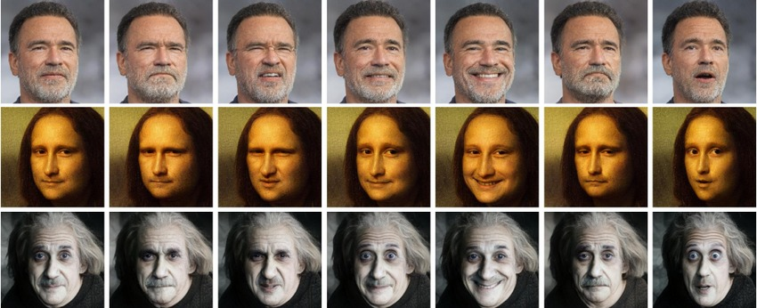
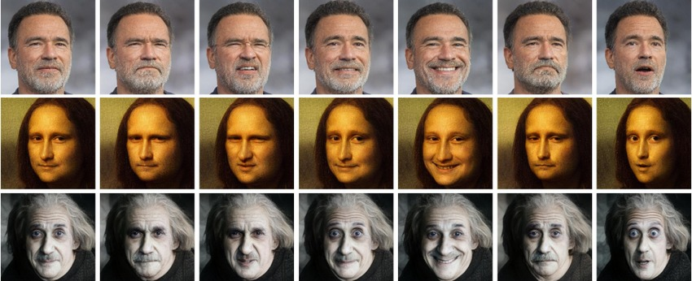

Deepfake Audio & Video
Detection using AI/ML Techniques
In today's world, discerning real media from artificial media can be challenging. This deepfake detection tool employs AI/ML techniques which in turn empowers users to analyze online audios and videos for authenticity, fostering a more informed online experience.
Background
Synthetic media, driven by advanced technologies like machine learning has
massively transformed digital content creation. This ranges from visuals to
lifelike videos and synthetic voices, and all of which have raised concerns about
misinformation, privacy breaches, and fraud given that this allows realistics
manipulation of videos. Deepfake audios and videos leverage sophisticated
techniques such as Generative Adversarial Networks (GANs) and deep neural networks.
These models analyze and mimic intricate patterns within large datasets, enabling
the synthesis of realistic facial expressions, lip movements, and voice characteristics.

Mockups like the ones above, showcase the ability of deepfake technology. Although deepfake technology was initially celebrated for enhancing creativity, in today’s era, the misuse of deepfake technology carries significant risks. In video and audio, deepfakes can create lifelike forgeries, impacting financial markets, enabling scams, and posing threats to political stability. Additionally, individuals may face identity theft, fraud, and reputational harm. Striking a balance between innovation and ethical use is crucial in navigating the complexities of deepfake technology.

Mockups like the ones above, showcase the ability of deepfake technology. Although deepfake technology was initially celebrated for enhancing creativity, in today’s era, the misuse of deepfake technology carries significant risks. In video and audio, deepfakes can create lifelike forgeries, impacting financial markets, enabling scams, and posing threats to political stability. Additionally, individuals may face identity theft, fraud, and reputational harm. Striking a balance between innovation and ethical use is crucial in navigating the complexities of deepfake technology.
73%
People According to a 2022 study by RAND Corporation, 73% of social media users encountered deepfakes or manipulated content between 2021 and 2022.96%
Deepfakes A 2021 report from DFValley.ai suggests that 96% of deepfakes analyzed by them were solely focused on manipulating faces.x5
Growth Rate The '2023 State of Deepfakes Report' reveals a fivefold increase in deepfake videos from 2019 to 2020, with the instances doubling approximately every six months.1.3
Trillion A 2020 McAfee report estimated that deepfakes could possibly cost businesses globally a staggering $1.3 trillion by 2025 due to fraud and reputational damage.Features of the Tool

Real-Time Deepfake Detection
Instantaneously identify manipulated content that enables protection against the spread of misinformation.
Unified Authentication Experience
Effortlessly validate the authenticity of images, videos, and audio through our comprehensive content authentication across varied formats.
User-Friendly
Interface
Effortlessly navigate this user-friendly interface by simply
uploading your file and receiving instant predictions with ease.
Deepfake
Detection Tool To initiate the process, please submit video files (.avi or .mp4), audio files (.mp3 or .wav or .flac), or image files (.png or .jpg).
Detection Tool To initiate the process, please submit video files (.avi or .mp4), audio files (.mp3 or .wav or .flac), or image files (.png or .jpg).
About us
This web application was developed for the project
requirements of the 6th semester, B.Voc. Data Science
and Analytics course at Mount Carmel College Autonomous,
Bengaluru.
This project was undertaken by Aarushi
Vishwanathan, Rumana Shethwala, and Sarah Arshad (Batch of
2021-24).
We express our profound gratitude to Dr. Mangesh Mankar for his invaluable guidance.
His expertise and passion have shaped our journey, instilling
innovation and excellence.